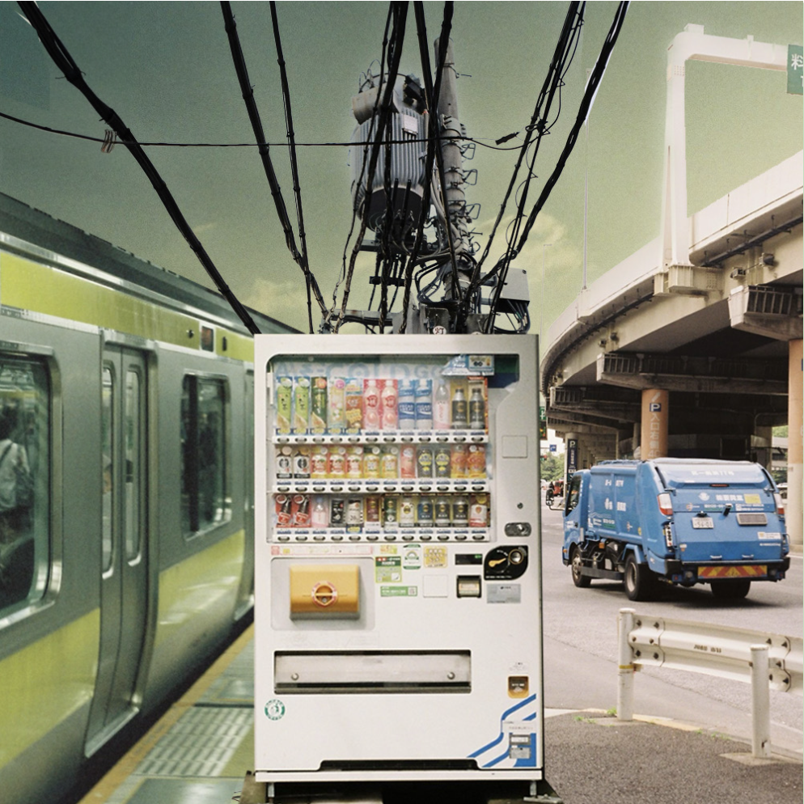

About: Project Background
What is this collage for?
This collage represents what aspects of Tokyo this project aims to improve.
Tokyo is a city composed of layers. Transportation, infrastructure, waste, power, metro, etc. Convenience culture dominates the Japanese lifestyle though 24 hour stores and vending machines. A new layer of convienece based waste disposal will be overalyed upon the existing fabric of Tokyo.
Pedestrian Waste
Pedestrian waste is categorized by waste generated and carried by pedestrians circulating through urban spaces. Pedestrian waste originates from places such as vending machines and convenience stores and usually consists of small waste items such as bottles, cans, and wrappers.
Waste receptacles are strategically placed in high-traffic areas at specific distances away from waste sources to allow pedestrians to consume their products and dispose of waste at the appropriate time. Once received by a receptacle, pedestrian waste is automatically sorted and then appropriately distributed using an underground converted subway train to deliver the waste to a larger waste processing facility.
Pedestrian Waste System Example
❮ ❯- On the outskirts of the Kamiyacho neighborhood, a pedestrian walkway provides a circulation path over a busy highway.
- Directly underneath this highway runs the Yamate Tunnel.
- As a result of being unable to interfere with the existing tunnel, the typically underground waste management system emerges above and over the street, while simultaneously reconstructing the existing pedestrian walkway.
- Waste pipes become structural and occupiable.